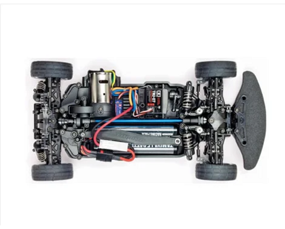
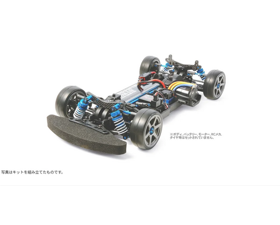
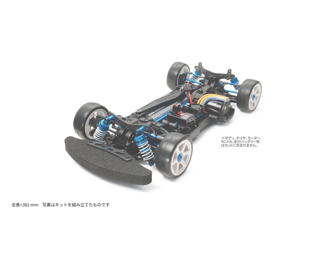

タミヤ TB-04

引用元画像：タミヤ公式サイト
📋 基本情報
| メーカー | タミヤ（Tamiya） |
|---|---|
| 機種名 | TB-04 |
| 型番 | 84339（TB-04 PRO）など |
| 発売時期 | 2013年 |
| 生産状況 | 現行販売中 |
| カテゴリー | ラジコンカー（1/10スケール 電動RCカー） |
| サブカテゴリー | ツーリングカー（オンロード競技モデル） |
📏 シャーシスペック
| シャーシ長 | 381mm |
|---|---|
| シャーシ幅 | 185mm |
| ホイールベース | 257mm |
| トレッド | 前後とも161mm |
| フレーム | バスタブタイプ（船底形状） |
⚙️ 駆動系
| 駆動方式 | 横置きモーター・シャフトドライブ4WD |
|---|---|
| デフギヤ | オイル封入式ギヤデフ |
| ギヤ比 | 7.86:1～5.50:1まで10種類（キット標準6.60:1） |
| モーター | 540タイプ（別売） |
| ベアリング | フルベアリング仕様 |
🔧 サスペンション
| 形式 | 4輪ダブルウィッシュボーン |
|---|---|
| ダンパー | TRFショートダンパー |
| ステアリング | 3分割タイロッド式 |
💡 特徴
シャフトドライブの利点を活かした設計
- 駆動効率の高いシャフトドライブ4WD採用
- 横置きモーターによる安定した操縦性
- ピックアップ性と駆動効率に優れる
- クセのない操縦特性
レース志向の設計
- タミヤグランプリをはじめとした各種レースへの参戦を見据えた設計
- 足回りをはじめとした多彩なセッティング項目
- 豊富なオプションパーツ
- 前モデルTB-03シャーシ用パーツの多くも利用可能
幅広いレベルに対応
- 入門ユーザーからレース志向のユーザーまで幅広く対応
- AMB用の専用スペースを装備（シャーシ裏面から脱着）
- セッティングの自由度が高い
🎨 バリエーション
📦 TB-04 PRO II

さらなる旋回性能を追求
• TRF418タイプの前後サスアームとアップライト使用
• リバウンド調整が2mm六角レンチでスピーディに可能
• 前後ギヤデフ、TRFショートダンパー装備
• 六角穴ビス使用で締め付け力とメンテナンス性向上
📦 TB-04R

剛性アップでいっそう切れのある走りを実現
• 主要樹脂部品をカーボンファイバー配合強化樹脂製に
• TRF418と同形状の前後サスアームとアップライト
• TRFビッグボアダンパー（ブラック）装備
• 約30点ものオプションパーツを標準装備
🔧 ぽすとそに工房での修理実績
修理難易度
★★★☆☆（中級者向け、セッティング知識が必要）
よくある故障・注意点
- シャフトドライブのため定期的なグリスアップが必要
- ギヤの噛み合わせ調整が重要
- デフギヤのメンテナンスは計画的に
- ダンパーオイル漏れに注意
修理のポイント
- シャフト類のグリスアップを怠らない
- ギヤの摩耗を定期的にチェック
- デフギヤのオイル粘度選びが走行性能に影響
- ダンパーの定期的なオーバーホール推奨
その他の特徴
- シャフトドライブならではの駆動効率の良さ
- 横置きモーターによる扱いやすさ
- TB-03からのステップアップに最適
- タミヤグランプリに参戦可能